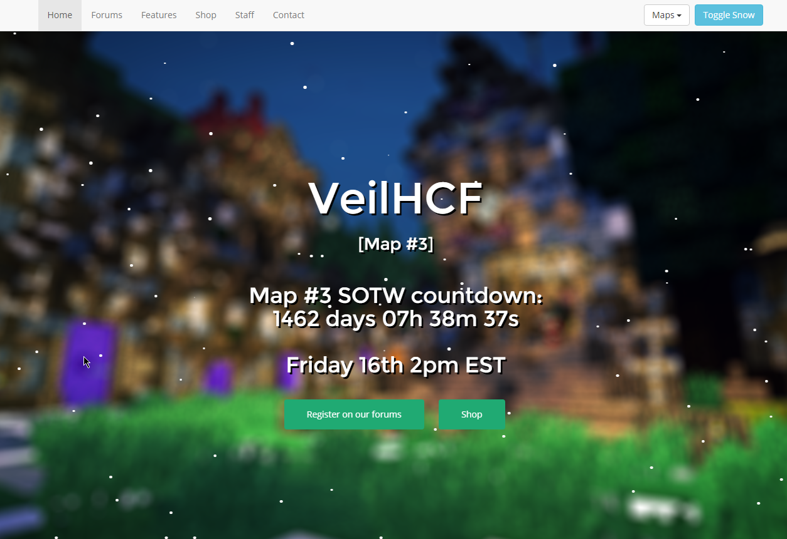

Some works

VeilHCF Website
VeilHCF was a minecraft network which had more that 450 players connected. I developed their main website and their forum software. The main website, or portal, was made using Bootstrap and with many custom styles. The forums and the portal were developed with the best cache system I have ever made. To finish up, both webs have had a high performance, more or less 0.0164 seconds of website generation and 1.7 seconds of loading. This server joined with another net and the website had shutdown. In a near future (we hope) we are going to launch VeilHCF again with new stuff and better performance. A little preview of the main website is available at this text adress.This project is no longer maintained and it's source won't be relased. For bussines with this website (might be selled) please

Button Maker
I hate the part of developing a website when I have to add sharing buttons... I really hate it so I made a website that helps making them. You simply follow up the instructions and copy the auto-generated template of the main.css and the html source. A live preview is available at this adress.This project is no longer maintained.